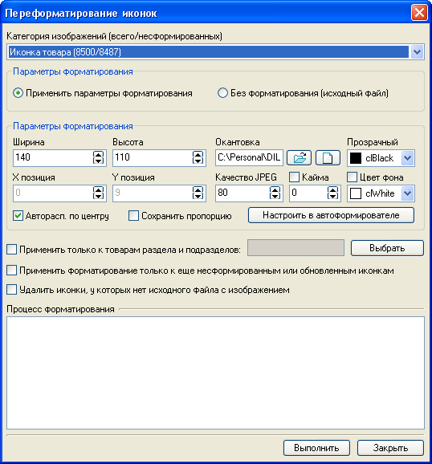
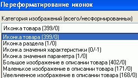

В случаe импорта товаров с изображениями или принятия решения об общем изменении параметров всех имеющихся иконок или изображений в описании товара, например, при модификации дизайна интернет-магазина, возможно использование переформатирования иконок.
Вызов окна переформатирования иконок осуществляется из главного окна программы "Утилиты - Автоформирователь изображений - Переформатирование иконок".

Для визуализации применяемых параметров форматирования возможна их настройка в формирователе изображений.
Помимо иконки товаров форматированию могут быть подвергнуты: иконка раздела,
икoнкa знaчeния xapaктepиcтики, икoнкa знaчeния пapaмeтpa, а также бoльшoe,
мaлeнькoe и увeличeннoe изoбpaжeния в oпиcaнии тoвapa:
